Customizing Tactile Sensors via Machine Learning-driven Inverse Design
Baocheng Wang†, Depeng Kong†, Zhiao He†, Jikai Liang, Yuyao Lu, Zikang Deng, Honghe Li, Mengke Wang, M. Jamal Deen, Zhiqiu Ye, Shuyao Zhou, Huayong Yang, Honghao Lyu*, Jun Chen, Kaichen Xu, and Geng Yang*
Advanced Science, In Press, 2026
[paper]
lvhonghao[at]zju[dot]edu[dot]cn
Intro
I am an Assistant Professor (ZJU 100 Young Professor) at the Institute of Advanced Machines, Zhejiang University.
I received my PhD in Mechatronic Engineering at Zhejiang University, Hangzhou, China, advised by Prof. Geng Yang.
I was also a visiting Ph.D. student with Division of Information Science and Engineering
at KTH Royal Institute
of Technology, Stockholm, Sweden, advised by Dr. Zhibo
Pang. I worked as a guest researcher for one year in the Lab of Intelligent Communication & Robotics
with Prof. Alf Isaksson at ABB Corporate Research Center, Vasteras, Sweden.
My research interests lie in Robot teleoperation, Dual-arm Manipulation, Human–robot Intelligent
Interface, Wireless Robot. My research goal is to develop a robust robotic
system that can reproduce the operators' operation intention.
News
• [2026/02] Joined the Institute of Advanced Machines, Zhejiang University as an Assistant Professor (ZJU 100 Young Professor).• [2025/10] One paper is accepted by IEEE THMS.
• [2025/09] One paper is accepted by IEEE IoTJ.
• [2025/08] We are organizing a haptic workshop in IROS 2025.
• [2025/08] Our book ‘Human motion awareness and robot teleoperation’ has been published in Springer.
• [2025/07] Selected for Priority-Funded Postdoctoral Research of China Postdoctoral Science Foundation.
• [2024/11] Get the general funding from China Postdoctoral Science Foundation.
• [2024/10] Selected for Priority-Funded Postdoctoral Research Project, Zhejiang Province.
• [2024/08] Get the funding from National Natural Science Foundation of China (NSFC).
• [2024/06] One paper is accepted by IEEE IEM.
• [2024/05] Selected for Postdoctoral Fellowship Program (Grade B) of China Postdoctoral Science Foundation.
• [2024/04] One paper is accepted by IEEE TASE.
• [2024/02] Continue my research as a Postdoc in Zhejiang University.
• [2023/12] I have passed the Ph.D. defense, finally Dr. Lyu is coming.
• [2023/11] My Ph.D. Dissertation has passed the double-blind review.
• [2023/07] Our paper has been selected as the Best Student Paper Finalist Award in ICIRA 2023.
• [2023/03] One Paper is accepted by ICIRA 2023.
• [2022/10] Our paper has been selected as the IEEE IES Young Professionals & Students Paper Assistance Award in IECON 2022.
• [2021/05] Our paper has been selected as the Outstanding Papers of of China Association for Science and Technology (CAST) in 2022, 第七届中国科协优秀科技论文.
Publication
Selected Works:
(* indicates the corresponding author)
Towards Anthropomorphic Grasping in Food Industries: A Dual-Arm Mobile Robot with Human-like Reaching Function for Adaptive Grasping
Honghao Lyu, Ruohan Wang, Yuyao Lu, Mengke Wang, Le Li, Huayong Yang, Jialin Zhang* and Geng Yang*
IEEE Internet of Things Journal (IEEE IoTJ), 2025
[paper]
A Proactive Safety Architecture Based on Proximity Sensing for Enhanced Human-Robot Interaction in Tele-Homecare
Ruohan Wang, Ying Yang, Zhengjie Zhu, Chen Li, Xiaoyan Huang, Xiao Yang, Lipeng Chen, Dashun Zhang, Haiteng Wu, Geng Yang, and Honghao Lyu*
IEEE Transactions on Human Machine Systems (IEEE THMS), 2025
[paper]
Super-Resolution Tactile Sensor Arrays with Sparse Units Enabled by Deep Learning
Depeng Kong, Yuyao Lu, Shuyao Zhou, Mengke Wang, Gaoyang Pang, Baocheng Wang, Lipeng Chen, Xiaoyan Huang, Honghao Lyu, Kaichen Xu*, and Geng Yang*
Science Advances, 2025
[paper]
Latency-Aware Control for Wireless Cloud Fog Automation: Framework and Case Study
Honghao Lyu, Anna Bengtsson, Sofie Nilsson, Zhibo Pang, Alf Isaksson, and Geng Yang
IEEE Transactions on Automation Science and Engineering (IEEE TASE), 2024
[paper]
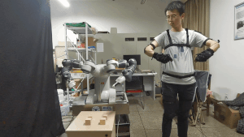

Full Publication List:
(† co-first author, * corresponding author)
Filter by type:
|
Book
- [B.1] Honghao Lyu, Geng Yang, Huayong Yang, “Human Motion Awareness and Robot Teleoperation: Perception, Communication and Control”, Springer, eBook ISBN 978-981-96-6545-7, Oct. 2025, [DOI]
Journal Papers
2026
- [J.32] Baocheng Wang†, Depeng Kong†, Zhiao He†, Jikai Liang, Yuyao Lu, Zikang Deng, Honghe Li, Mengke Wang, M. Jamal Deen, Zhiqiu Ye, Shuyao Zhou, Huayong Yang, Honghao Lyu*, Jun Chen, Kaichen Xu, and Geng Yang*, “Customizing Tactile Sensors via Machine Learning-driven Inverse Design,” Advanced Science, In Press, Jan. 2026, [DOI]
- [J.31] Lican Zheng, Yuyao Lu*, Honghao Lyu, Tianyu Li, Songya Cui, Yuhong Xu, Zimo Cai, Yuyu Hou, Yibo Li, Qianqian Yang, Zhiqiu Ye, Geng Yang*, and Kaichen Xu*, “Laser Fabrication of Flexible Electrodes for Bioelectronics,” Biosensors and Bioelectronics, 298, 118386, Jan. 2026, [DOI]
2025
- [J.30] Honghao Lyu, Ruohan Wang, Yuyao Lu, Mengke Wang, Le Li, Huayong Yang, Jialin Zhang* and Geng Yang*, “Towards Anthropomorphic Grasping in Food Industries: A Dual-Arm Mobile Robot with Human-like Reaching Function for Adaptive Grasping”, IEEE Internet of Things Journal, Oct. 2025, [DOI]
- [J.29] Ruohan Wang, Ying Yang, Zhengjie Zhu, Chen Li, Xiaoyan Huang, Xiao Yang, Lipeng Chen, Dashun Zhang, Haiteng Wu, Geng Yang, and Honghao Lyu*, “A Proactive Safety Architecture Based on Proximity Sensing for Enhanced Human-Robot Interaction in Tele-Homecare,” IEEE Transactions on Human Machine Systems, 56(1), 135-146, Dec. 2025, [DOI]
- [J.28] Kang Liu, Yefeng Yang, Honghao Lyu*, Wenyu Yang, Yifei Zhang, Zheng Tan, and Chih-Yung Wen*, “Adaptive Predefined-Time Disturbance Observer-Based Fast Nonsingular Sliding Mode Control Strategy for Consumer Quadrotor UAVs: Theory and Experiments,” IEEE Transactions on Consumer Electronics, vol. 71, 4, Sept. 2025, [DOI]
- [J.27] Zhangli Lu, Ruohan Wang, Huiying Zhou, Na Dong*, Honghao Lyu*, and Geng Yang, “A Novel Gait Identity Recognition Method for Personalized Human-robot Collaboration in Industry 5.0,” Chinese Journal of Mechanical Engineering, vol. 38, 191, Sept. 2025, [DOI]
- [J.26] Qianqian Yang, Bingqiao Li, Mengke Wang, Gaoyang Pang, Yuyao Lu, Jiayan Li, Huayong Yang, Honghao Lyu, Kaichen Xu*, Geng Yang*, “Machine Learning-Enhanced Modular Ionic Skin for Broad-Spectrum Multimodal Discriminability in Bidirectional Human–Robot Interaction,” Advanced Materials, e08795, Jul. 2025, [DOI]
- [J.25] 吕鸿昊, 诸正杰, 程宇航, 何平, 汪若菡, 陈富国, 杨华勇, 杨赓, 董娜*, “工业机器人主动安全作业方法与应用”, 机械工程学报, vol.61, no.15, Aug. 2025, [DOI]
- [J.24] Depeng Kong, Yuyao Lu, Shuyao Zhou, Mengke Wang, Gaoyang Pang, Baocheng Wang, Lipeng Chen, Xiaoyan Huang, Honghao Lyu, Kaichen Xu*, and Geng Yang*, “Super-Resolution Tactile Sensor Arrays with Sparse Units Enabled by Deep Learning”, Science Advances, vol.11, art no.eadv2124, Jun. 2025, [DOI]
- [J.23] Ruohan Wang, Honghao Lyu, Zhengjie Zhu, Ying Yang, Xiaoyan Huang, Haiteng Wu, Na Dong, Lipeng Chen, and Geng Yang*, “Safety-Aware Shared Control for Teleoperated Robotic Precision Tasks under Dynamic Interference”, IEEE Robotics and Automation Letters, vol. 10, no. 9, pp.9328-9335, Jul. 2025, [DOI]
- [J.11] Zhangli Lu, Huiying Zhou, Gaoyang Pang, Shuyao Zhou, Weijing Sui, Honghao Lyu, and Geng Yang*, “Personalized Stroke Rehabilitation via Stratified Interpretable Modeling with Wearable IMUs”, IEEE Transactions on Neural Systems and Rehabilitation Engineering, vol. 33, pp.4325-4337, Oct. 2025, [DOI]
- [J.10] Zhangli Lu, Huiying Zhou, Longqiang Wang, Depeng Kong, Honghao Lyu, Haiteng Wu, Bing Chen, Fuguo Chen, Na Dong, and Geng Yang*, “GaitFormer: Two-Stream Transformer Gait Recognition Using Wearable IMU Sensors in the Context of Industry 5.0”, IEEE Sensors Journal, vol. 25, no. 11, pp.19947-19956, Apr. 2025, [DOI]
- [J.9] Zhangli Lu, Huiying Zhou, Honghao Lyu, Haiteng Wu, Shaohua Tian, and Geng Yang*, “Berg Balance Scale Scoring System for Balance Evaluation by Leveraging Attention-Based Deep Learning with Wearable IMU Sensors”, Bioengineering, vol.12, no.4, 395, Apr. 2025, [DOI]
- [J.8] Shuyao Zhou, Depeng Kong, Mengke Wang, Baocheng Wang, Yuyao Lu, Honghao Lyu, Zhangli Lu, Yong Tao, Kaichen Xu, and Geng Yang*, “Unlocking Dynamic Subtle Stimuli Tactile Perception: A Deep Learning-Enhanced Super-Resolution Tactile Sensor Array with Rapid Response”, Advanced Intelligent Systems, vol.7, no.5, art no.2400913, Jun. 2025, [DOI]
2024
- [J.22] Honghao Lyu, Anna Bengtsson, Sofie Nilsson, Zhibo Pang, Alf Isaksson, and Geng Yang, “Latency-Aware Control for Wireless Cloud Fog Automation: Framework and Case Study”, IEEE Transactions on Automation Science and Engineering (IEEE TASE), vol.22, pp.5400-5410, Jul. 2024, [DOI]
- [J.21] Honghao Lyu, Jing Yan, Jialin Zhang, Zhibo Pang*, Geng Yang, and Alf Isaksson, “Cloud-Fog Automation: Heterogenous Applications over New Generation Infrastructure of Virtualized Computing and Converged Networks”, IEEE Industrial Electronics Magazine (IEEE IEM), vol.18, no.4, pp.30-42, Jun. 2024, [DOI]
- [J.7] Ruohan Wang, Chen Li, Honghao Lyu, Gaoyang Pang, Haiteng Wu, and Geng Yang*, “A Smooth Velocity Transition Framework Based on Hierarchical Proximity Sensing for Safe Human-Robot Interaction,” IEEE Robotics and Automation Letters (IEEE RAL), vol. 9, no.6, pp.4910-4917, Apr. 2024, [DOI]
2023
- [J.20] Honghao Lyu, Zhibo Pang*, Koushik Bhimavarapu, and Geng Yang, “Impacts of Wireless on Robot Control: The Network Hardware-in-the-Loop Simulation Framework and Real-Life Comparisons”, IEEE Transactions on Industrial Informatics (IEEE TII), vol.19, no.9, pp.9255-9265, Sep. 2023, [DOI] (TOP, IF = 12.3)
- [J.16] Ruohan Wang†, Honghao Lyu†, Zhangli Lu, Xiaoyan Huang, Haiteng Wu, Junjie Xiong, Geng Yang*, “A Medical Assistive Robot for Tele-healthcare During the COVID-19 Pandemic: Development and Usability Study in an Isolation Ward”, JMIR Human Factors, vol.10, art. no.e42870, Jan. 2023, [DOI] (Co-first author)
- [J.15] Huiying Zhou, Honghao Lyu, Ruohan Wang, Haiteng Wu, Geng Yang*, “Revitalizing Human-Robot Interaction: Phygital Twin Driven Robot Avatar for China–Sweden Teleoperation”, Chinese Journal of Mechanical Engineering (CJME), vol.36, art. no.124, Oct. 2023, [DOI]
- [J.6] Zhiqiu Ye, Gaoyang Pang, Yihao Liang, Honghao Lyu, Kaichen Xu, Geng Yang*, “Highly Stretchable and Sensitive Strain Sensor Based on Porous Materials and Rhombic-mesh Structures for Robot Teleoperation,” Advanced Sensor Research, vol.2, no.10, art. no.2300044, Oct. 2023, [DOI]
- [J.5] Qianqian Yang, Zhiqiu Ye, Renke Wu, Honghao Lyu, Chen Li, Kaichen Xu, Geng Yang*, “A Highly Sensitive Iontronic Bimodal Sensor with Pressure-Temperature Discriminability for Robot Skin,” Advanced Materials Technologies, vol.8, no.21, art. no. 2300561, Aug. 2023, [DOI]
2022
- [J.19] Honghao Lyu, Depeng Kong, Gaoyang Pang, Baicun Wang, Zhangwei Yu, Zhibo Pang, and Geng Yang*, “GuLiM: A Hybrid Motion Mapping Technique for Teleoperation of Medical Assistive Robot in Combating the COVID-19 Pandemic,” IEEE Transactions on Medical Robotics and Bionics (IEEE TMRB), vol.4, no.1, pp.106-117, Jan. 2022, [DOI] (Popular Article)
- [J.4] Depeng Kong, Geng Yang*, Gaoyang Pang, Zhiqiu Ye, Honghao Lyu, Zhangwei Yu, Fei Wang, Xi Vincent Wang, Kaichen Xu, and Huayong Yang, “Bioinspired Co-Design of Tactile Sensor and Deep Learning Algorithm for Human-Robot Interaction,” Advanced Intelligent Systems, vol. 4, no. 6, art. no.2200050, Jun. 2022, [DOI]
- [J.1] Zhiqiu Ye†, Gaoyang Pang†, Kaichen Xu, Zeyang Hou, Honghao Lyu, Yiren Shen, and Geng Yang*, “Soft Robot Skin with Conformal Adaptability for On-body Tactile Perception of Collaborative Robots,” IEEE Robotics and Automation Letters, vol.7, no.2, pp.5127-5134, Apr. 2022, [DOI]
2021
- [J.3] Zakka Vincent Gbouna†, Gaoyang Pang†, Geng Yang*, Zeyang Hou, Honghao Lyu, Zhangwei Yu, and Zhibo Pang, “User-Interactive Robot Skin with Large-Area Scalability for Safer and Natural Human-Robot Collaboration in Future Telehealthcare,” IEEE Journal of Biomedical and Health Informatics, vol.25, no.12, pp.4276-4288, May 2021, [DOI]
2020
- [J.18] Honghao Lyu, Geng Yang*, Huiying Zhou, Xiaoyan Huang, Huayong Yang, Zhibo Pang, “Teleoperation of Collaborative Robot for Remote Dementia Care in Home Environments,” IEEE Journal of Translational Engineering in Health and Medicine (IEEE JTEHM), vol.8, art no.1400510, Jun. 2020, [DOI]
- [J.17] Geng Yang*, Honghao Lyu, Zhiyu Zhang, Liu Yang, Siqi You, Juan Du, Huayong Yang, “Keep Healthcare Workers Safe: Application of Teleoperated Robot in Isolation Ward for COVID-19 Prevention and Control”, Chinese Journal of Mechanical Engineering (CJME), vol.33, art no.47, Jun. 2020, [DOI]
- [J.2] Wenzheng Heng, Geng Yang, Gaoyang Pang, Zhiqiu Ye, Honghao Lyu, Juan Du, Guodong Zhao, and Zhibo Pang, “Fluid-Driven Soft CoboSkin for Safer Human-Robot Collaboration: Fabrication and Adaptation,” Advanced Intelligent Systems, vol.3, no.3, art. no.2000038, Jun. 2020, [DOI]
2019
- [J.14] Huiying Zhou, Geng Yang*, Honghao Lyu, Zhibo Pang, Xiaoyan Huang, Huayong Yang, “IoT-enabled Dual-arm Motion Capture and Mapping for Telerobotics in Homecare”, IEEE Journal of Biomedical and Health Informatics (IEEE JBHI), vol.24, no.6, pp.1541-1549, Nov. 2019, [DOI]
2018
- [J.13] Geng Yang, Honghao Lyu, Feiyu Chen, Zhibo Pang, Jin Wang, Huayong Yang, Junhui Zhang*, “A Novel Gesture Recognition System for Intelligent Interaction with a Nursing-Care Assistant Robot”, Applied Sciences-Basel, vol.8, no.12, art. no.2349, Dec. 2018, [DOI]
- [J.12] Feiyu Chen, Honghao Lyu, Zhibo Pang, Junhui Zhang, Yonghong Hou, Ying Gu, Huayong Yang and Geng Yang*, “WristCam: A Wearable Sensor for Hand Trajectory Gesture Recognition and Intelligent Human-Robot Interaction”, IEEE Sensors Journal, vol.19, no.19, pp.8441-8451, Oct. 2018, [DOI]
Conference Papers
2025
- [C.21] Zemin Zhang, Honghao Lyu, Haiteng Wu, Shaohua Tian, Yi Chen, Geng Yang*, “Digital Twin-Enabled Offline Trajectory Generation and Real-Time Control for Robotic Laser Processing on Complex Surfaces”, in the 23rd IEEE International Conference on Industrial Informatics (INDIN 2025), Kunming, China, Jul. 2025. [DOI]
- [C.20] Guangwei Zhang, Ruohan Wang, Mengke Wang, Honghao Lyu*, Dapeng Lan, Dashun Zhang, and Geng Yang, “Wearable Exoskeleton-Based Immersive Teleoperation for Industrial Manufacturing Systems: Hardware Design and Verification”, in the 23rd IEEE International Conference on Industrial Informatics (INDIN 2025), Kunming, China, Jul. 2025. [DOI]
- [C.19] Thien Tran, Jonathan Kua, Minh Tran, Honghao Lyu, Thuong Hoang and Jiong Jin, “CFTel: A Practical Architecture for Robust and Scalable Telerobotics with Cloud-Fog Automation”, in the 23rd IEEE International Conference on Industrial Informatics (INDIN 2025), Kunming, China, Jul. 2025. [DOI]
- [C.18] Ruohan Wang, Guangwei Zhang, Zhengjie Zhu, Honghao Lyu, Xiaoyan Huang, Na Dong, Lipeng Chen, M. Jamal Deen, and Geng Yang*, “Advancing Robot Interaction Safety: A Teleoperated Shared-Control Approach Using a Lightweight Force-Feedback Exoskeleton”, in the IEEE/RSJ International Conference on Intelligent Robots and Systems (IROS 2025), Hangzhou, China, Oct. 2025. [DOI]
2024
- [C.17] Siyuan Liu, Dapeng Lan*, Jia Wang, Dongxiao Hu, Zhibo Pang, Honghao Lyu, “How Pretrained Foundation Models and Cloud-Fog Automation Empower the Recycling of Electrical Vehicles”, in the 22nd IEEE International Conference on Industrial Informatics (INDIN2024), Beijing, China, Aug. 2024, [DOI]
- [C.14] Deyou Zhang and Honghao Lyu*, “NOMA Enabled Multi-Access Edge Computing: A Joint MU-MIMO Precoding and Computation Offloading Design”, in the 33rd International Symposium on Industrial Electronics (ISIE 2024), Ulsan, Korea, Jun. 2024, [DOI]
- [C.7] Mengke Wang, Honghao Lyu, Ruohan Wang, Haiteng Wu, Lipeng Chen, Yi Chen, Haihui Yuan, Geng Yang, “Enhancing Robot Teleoperation in Remote Automation Production through an Event-Triggered Control Strategy”, in the 33rd International Symposium on Industrial Electronics (ISIE 2024), Ulsan, Korea, Jun. 2024, [DOI]
- [C.6] Lei Wang, Ruohan Wang, Honghao Lyu, Na Dong, Zhongwei Zhang, Yungang Hao, Haihui Yuan, Haiteng Wu, Geng Yang, “Liberating Humanity from Heavy Labor: Dual-Arm Coordination and Teleoperation Control for an Assistive Robot”, in the 33rd International Symposium on Industrial Electronics (ISIE 2024), Ulsan, Korea, Jun. 2024, [DOI]
- [C.3] Guangwei Zhang, Ruohan Wang, Honghao Lyu*, Dashun Zhang, Haihui Yuan, Lipeng Chen and Geng Yang, “Design and Control of a Wearable Upper-Limb Exoskeleton Featuring Force Feedback for Teleoperation”, in the 17th International Conference on Intelligent Robotics and Applications (ICIRA2024), Hangzhou, China, Jul. 2024, [DOI]
- [C.2] Ying Yang, Chen Li, Ruohan Wang, Huayu Luo, Honghao Lyu, Haiteng Wu, Dashun Zhang, Lipeng Chen, and Geng Yang, “Design of Highly Integrated Microscale Fingertip Tactile Sensor for Robot Dexterous Hand”, in the 17th International Conference on Intelligent Robotics and Applications (ICIRA2024), Hangzhou, China, Jul. 2024, [DOI]
- [C.1] Ruohan Wang, Guangwei Zhang, Guangyao Zhang, Honghao Lyu, Na Dong, Zhongwei Zhang, Yungang Hao, Haihui Yuan, Haiteng Wu, Geng Yang*, “Towards Immersive Teleoperation: Dynamic Identification for Force Feedback of a Wearable Exoskeleton”, in the 7th IFToMM Asian Mechanisms and Machine Science Conference (Asian-MMS 2024), Almaty, Kazakhstan, Aug. 2024, [DOI]
2023
- [C.16] Honghao Lyu, Huiying Zhou, Ruohan Wang, Haiteng Wu, Zhibo Pang and Geng Yang*, “Towards Intercontinental Teleoperation: A Cloud-Based Framework for Ultra-Remote Human-Robot Dual-Arm Motion Mapping”, in the 16th International Conference on Intelligent Robotics and Applications (ICIRA2023), Hangzhou, China, Jul. 2023, [DOI]. (Best Student Paper Finalist Award)
- [C.13] Ping He, Honghao Lyu, Haiteng Wu, and Geng Yang*, “Modeling and Control of Differential-Drive Chassis for a Homecare Assistive Robot”, in the 32nd International Symposium on Industrial Electronics (ISIE2023), Helsinki, Finland, Jun. 2023, [DOI]
- [C.12] Jiayan Li, Honghao Lyu, Haiteng Wu, Geng Yang*, “Design and Realization of a Multi-DoF Robotic Head for Affective Humanoid Facial Expression Imitation”, in the 16th International Conference on Intelligent Robotics and Applications (ICIRA2023), Hangzhou, China, Jul. 2023, [DOI]
- [C.5] Ruohan Wang, Xi Cui, Honghao Lyu, Haiteng Wu, Geng Yang*, “Enable Intuitive and Immersive Teleoperation: Design, Modeling and Control of a Novel Wearable Exoskeleton”, in the 16th International Conference on Intelligent Robotics and Applications (ICIRA2023), Hangzhou, China, Jul. 2023, [DOI]
2022
- [C.15] Honghao Lyu, Zhibo Pang, Geng Yang, “Hardware-in-the-Loop Simulation for Evaluating Communication Impacts on the Wireless-Network-Controlled Robots”, in the 48th Annual Conference of the IEEE Industrial Electronics Society (IECON 2022), Brussels, Belgium, Oct. 2022, [DOI] (IEEE IES Young Professionals & Students Paper Assistance Award)
2020
- [C.11] Ruibin Zhang, Honghao Lyu, Huiying Zhou, Yurui Zhang, Chenhao Liu, and Geng Yang*, “A Gait Recognition System for Interaction with a Homecare Mobile Robot”, in the 46th Annual Conference of the IEEE Industrial Electronics Society (IECON 2020), Singapore, Oct. 2020, [DOI]
- [C.10] Yuqi Wang, Honghao Lyu, Huiying Zhou, Qi Cao, Zikang Li, and Geng Yang*, “A Sensor Glove Based on Inertial Measurement Unit for Robot Teleoperation”, in the 46th Annual Conference of the IEEE Industrial Electronics Society (IECON 2020), Singapore, Oct. 2020, [DOI]
2019
- [C.9] Huiying Zhou†, Honghao Lyu†, Kang Yi, Zhibo Pang, Huayong Yang, Geng Yang*, “An IoT-Enabled Telerobotic-Assisted Healthcare System Based on Inertial Motion Capture”, in the 2019 IEEE International Conference on Industrial Informatics (INDIN 2019), Helsinki, Jul. 2019, [DOI] (co-first author)
- [C.8] Shimin Pan, Honghao Lyu, Hong Duan, Gaoyang Pang, Kang Yi, and Geng Yang*, “A Sensor Glove for the Interaction with a Nursing-Care Assistive Robot”, in the 2019 IEEE International Conference on Industrial Cyber-Physical Systems (ICPS 2019), Taipei, May 2019, [DOI]
- [C.4] Huiying Zhou, Liu Yang, Honghao Lyu, Kang Yi, Huayong Yang, and Geng Yang*, “Development of a Synchronized Human-Robot-Virtuality Interaction System using Cooperative Robot and Motion Capture Device”, in the IEEE/ASME International Conference on Advanced Intelligent Mechatronics (AIM 2019), Hong Kong, Jul. 2019, [DOI]
Full Patent List:
Patents
- [P.6] Geng Yang, Ruohan Wang, Yi Chen, Xi Cui, Honghao Lyu, Guangyao Zhang, Na Dong, Zhongwei Zhang, Guohui Xu, Peng Lyu, Zhejiang University & Dongfang Electric Co., Ltd.; A Wearable Teleoperation Intelligent Equipment for Human-Machine Safe Interaction: ZL 202410867385.5 [P].2024-10-11. (Granted)
- [P.5] Geng Yang, Mengke Wang, Honghao Lyu, Huayong Yang, Zhejiang University; A Human-Machine Collaborative Teleoperation Control Method and Device Based on Proactive Force Guidance: 2024116934486 (Granted)
- [P.4] Geng Yang, Honghao Lyu, Gaoyang Pang, Huayong Yang, Zhejiang University; A Dirigible Dual-arm Omnidirectional Mobile Nursing-care Robot: ZL 2018 1 0534638.1 [P].2018-10-26. (Granted)
- [P.3] Geng Yang, Honghao Lyu, Ruohan Wang, Huayong Yang, Zhejiang University; A Movable Multi-DoF Dual-Arm Collaborative Robot: CN115958578A (Under examination)
- [P.2] Geng Yang, Ruohan Wang, Nan Zhang, Honghao Lyu, Haiteng Wu, Huayong Yang, Zhejiang University; Dual-Arm Collaborative Robot Based on Six-DoF Manipulator: CN115366071A (Under examination)
- [P.1] Honghao Lyu, Jingbin Hao, Kun Jia, China University of Mining and Technology; A Smart Home System Based on LabVIEW and TCP/IP Network Protocol: CN20172169 4857.3[P]. 2017-12-07. (Utility model, Granted)
Software Copyrights
- [S.5] Geng Yang, Depeng Kong, Honghao Lyu, Yuyao Lu, Huayong Yang, Zhejiang University; Interactive Software for Braille Recognition: Reg. No.2024 SR1647532.
- [S.4] Geng Yang, Mengke Wang, Honghao Lyu, Dashun Zhang, Zhejiang University; A Software for Object Recognition Based on Template Matching V1.0: Reg. No.2024 SR1506855.
- [S.3] Geng Yang, Honghao Lyu, Zhiyu Zhang, Huayong Yang, Zhejiang University; A Software for Acquisition and Analysis of Dual-arm Robot Motion Status V1.0: Reg. No.2020SR 0061078.
- [S.2] Geng Yang, Honghao Lyu, Ruohan Wang, Huayong Yang, Zhejiang University; A Human Motion Capture and Guidance Data Generation Software for Dual-arm Robot Teleoperation: Reg. No.2022 SR0816120.
- [S.1] Geng Yang, Le Li, Honghao Lyu, Huayong Yang, Zhejiang University; A Software for Controlling and Monitoring the Robot Torso Motion Status: Reg. No.2022 SR0816145.
Robot Systems
Teloperated Dual-arm YuMi Robot
If you want to know more about the human-robot motion mapping details, feel free to contact me. Here, we propose GuLiM, a new dexterous teleoperation system to transfer the upper-limb motion from the human to the robot. On the left, we show our hardware setup with the initial motion capture device with the YuMi robot.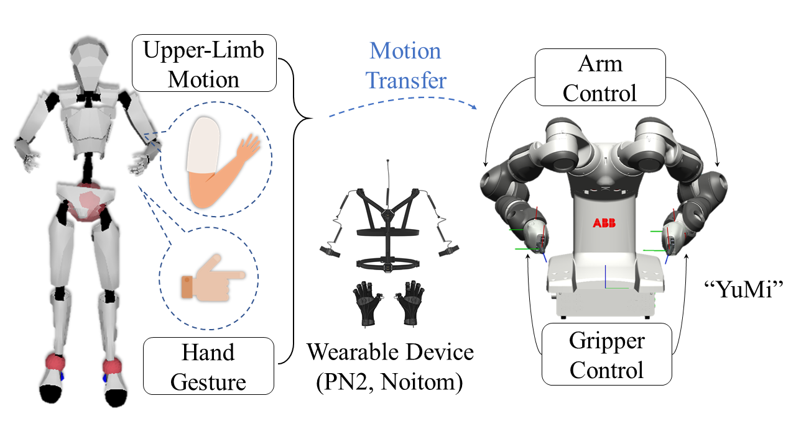
Hardware Setup
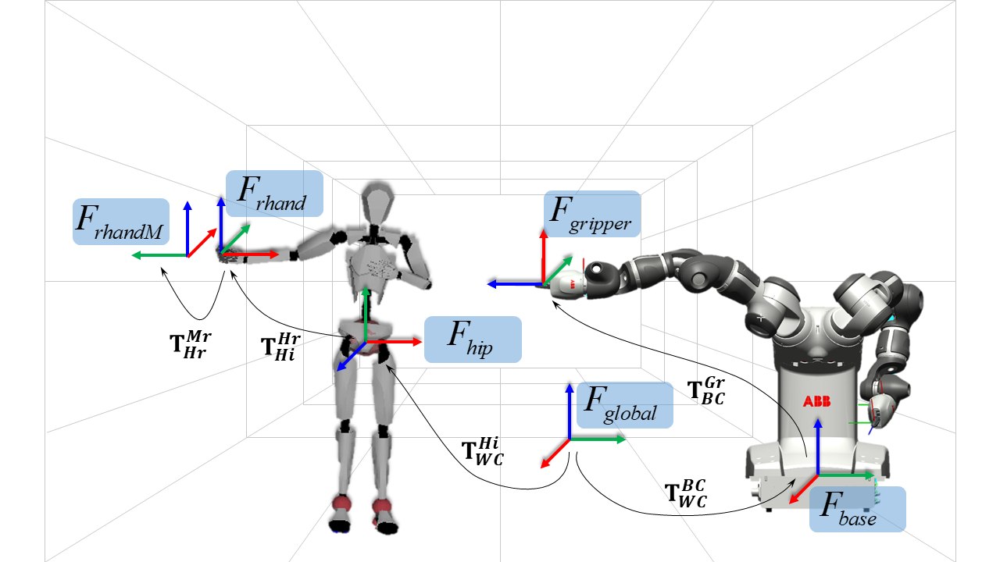
Motion Mapping Strategy
Experimental verification
Teloperated Dual-arm Robot used in Isolation Ward
This telerobotic system combines the strengths of healthcare workers (expert knowledge for patient care) with the strengths of robotics (social distancing and capabilities to work in hazardous environments) to give the best outcome to patients and healthcare workers. Implementation of the robot in the battle against COVID-19 has obtained positive feedback from healthcare workers for its potential in blocking infection and effectiveness in relieving medical workers from repeated tasks.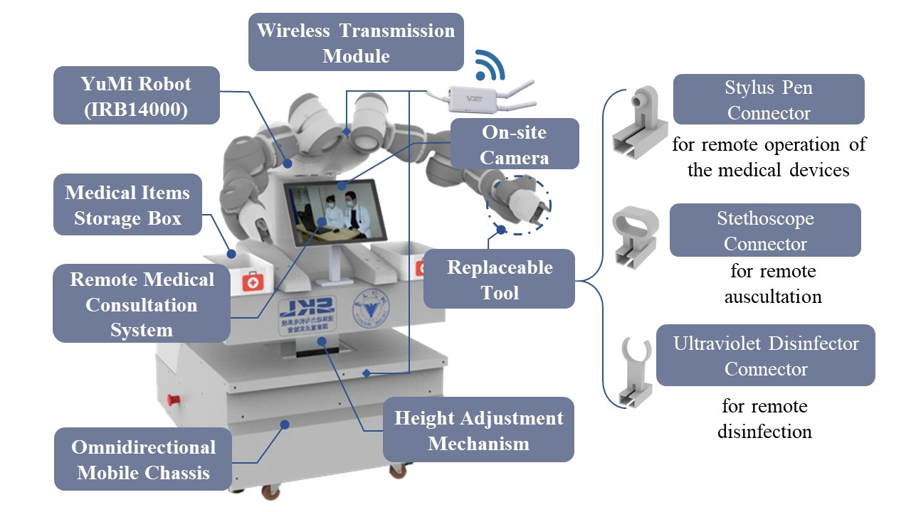
Hardware Setup

Functional Test
Verification in Isolation Ward
Teloperated Dual-arm Kinova Robot with Wheeled-Chassis
Here, an anthropomorphic dual-arm mobile robot named Herdsman for in-house grasping tasks is proposed.
Inspired by the human behavior
to grasp the object, an articulated torso is designed to perform human-like reaching motions.
Additionally, an anthropomorphic reaching
grasping movement generating method is proposed to achieve the task adaptability. The aim of this work is
to enhance the capabilities
and usefulness of service robots, increase the range of tasks that robots can perform, and improve their
overall utility and
effectiveness in home environments.
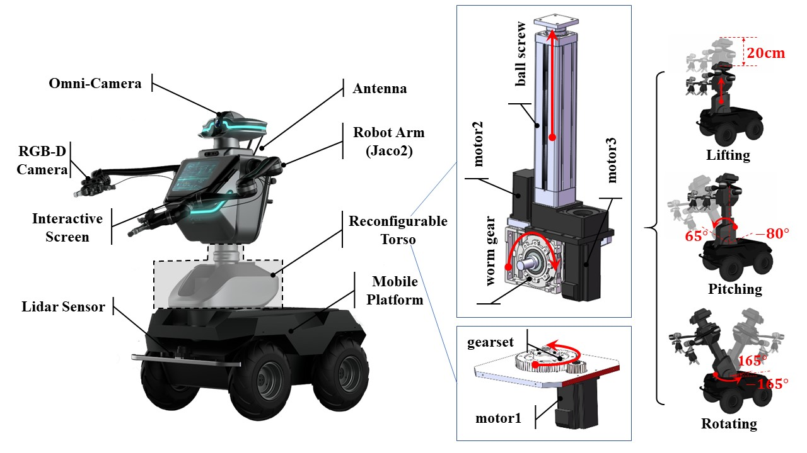
Hardware Setup
Movement Demonstration
Teleoperation Verification
Homecare Robot that can Carry and Assist People
We integrated the design of a nursing-care assistant robot for aged-care at home that can not only carry people similar to a wheelchair, but also grasp the target object. The user can sit on the seat part in front of the nursing cooperative robot, and the dual manipulator makes corresponding nursing actions behind the user such as assisting in helping the user get up from the seat, fetching the target object, and so on.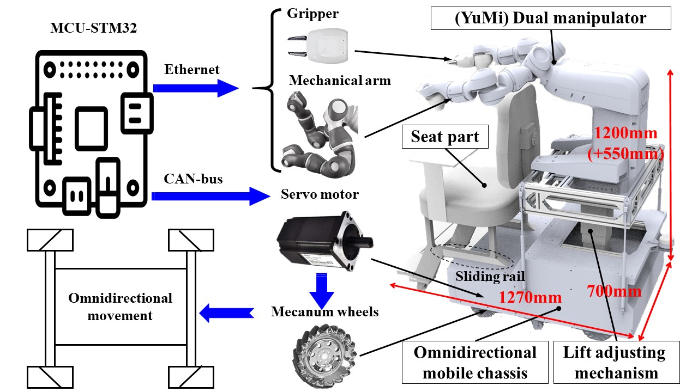
Hardware Setup
Movement Ability
Homecare Demonstration
Collaborative works for safe human-robot interaction
During my PhD, I collaborated with my colleagues to build various verification robot platforms to test their self-developed robot skin for safe HRI.Impedance Control
YuMi - Obstacle Avoidance
Kinova - Approaching Emergency Stop
Professional Service
Academic Duties• Junior Fellow, Hong Kong Institutes of Medical Engineering Limited (KIME) (2025-)
• Committee Member, Chinese Association of Automation - Edge Computing Technical Committee (2025-)
• Technical Committee Member, IEEE-IES Technical Committee on Industrial Informatics (TC-II) (2025-)
• Technical Committee Member, IEEE IES Technical Committee on Cloud and Wireless Systems for Industrial Applications (TC-CWAIA) (2024-)
• Technical Committee Member, IEEE RAS Human-Robot Interaction & Coordination (TC-HRIC) (2024-)
• Ambassador, IEEE Industrial Electronics Society (IES) for IEEE R10 region (Asia and Pacific) (2023-2024)
Editorial Service
• Guest Editor, IEEE Journal of Biomedical and Health Informatics (JBHI), SI on Cross-disciplinary research in informatics for neural, mental and psychological health
Conference Organization
• SYPA Forum Chair, IEEE INDIN2025, Kunming, China, Jul.12-15, 2025
• Workshop Chair, Advanced Haptic Sensors and Devices for Healthcare Robots, at IROS 2025, Hangzhou, China, Oct. 20, 2025
• Workshop Chair, Intelligent Inspection and Security for Industrial Manufacturing Systems, at INDIN2025, Kunming, China, Jul.12-15, 2025
• Session Chair & Principal Organizer, SS-Advanced Sensing and Control Technologies for Intelligent Human-Robot Interaction, at ICIRA2024, Xi'An, China
• Session Chair & Principal Organizer, SS-Communication and Control Co-design for Empowering Cloud-Fog Automation Systems, at ISIE2024, Ulsan, South Korea
Reviewer Service
• Journal Reviewer: Nature Communications, IEEE/ASME Transactions on Mechatronics, IEEE Transactions on Industrial Informatics, IEEE Transactions on Automation Science and Engineering, IEEE Robotics and Automation Letters, IEEE Robotics & Automation Magazine, IEEE Journal of Biomedical and Health Informatics, IEEE Internet of Things Journal, and 20+ other journals
• Conference Reviewer: IEEE ICRA, IEEE IROS, IEEE INDIN, IEEE/ASME AIM, RSS
More About Me
Footprints in Conferences
I am actively engaged in academic/industry conferences within the field of robotics, participating as an attendee, author, or event organizer. This allows me to keep track of the forefront developments in the current domain.
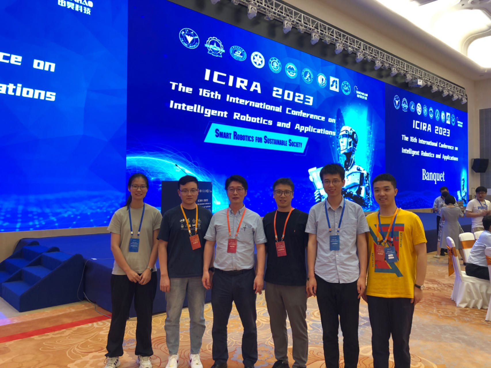
ICIRA 2023, Hangzhou, China
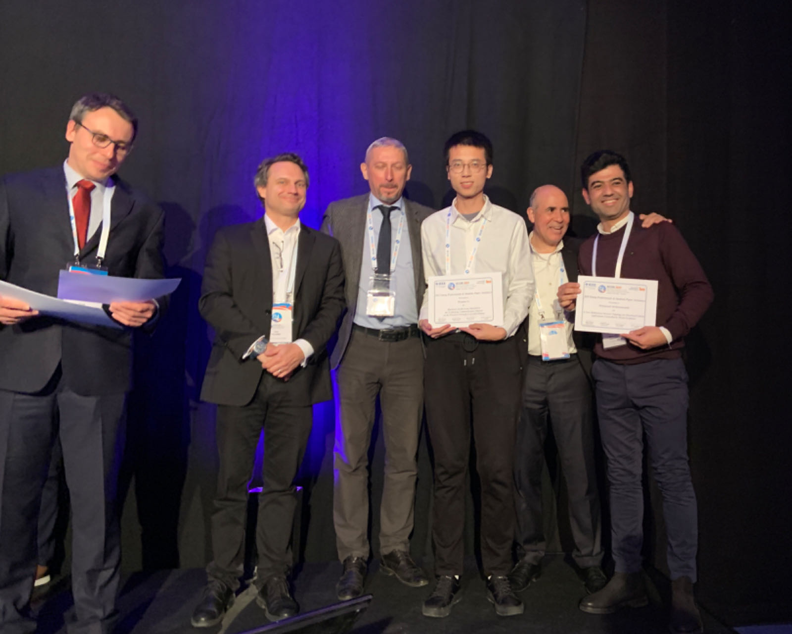
IECON 2022, Brussel, Belgium
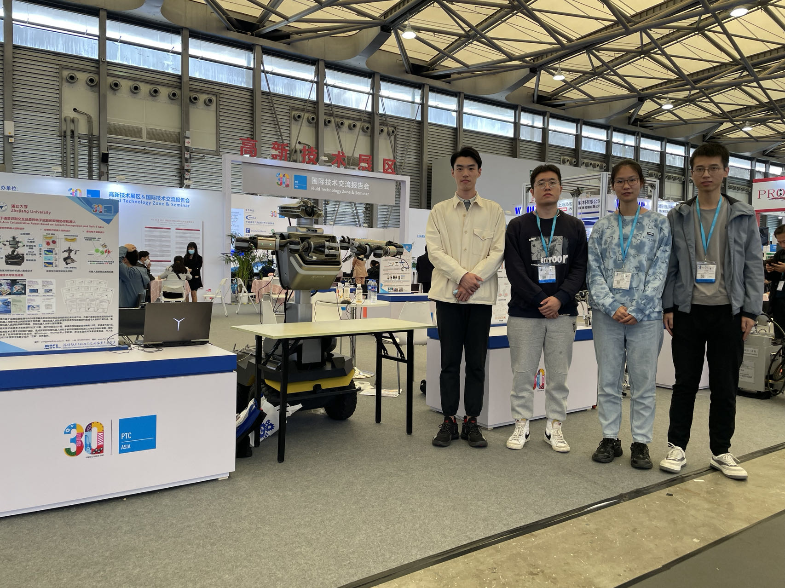
PTC 2021, Shanghai, China
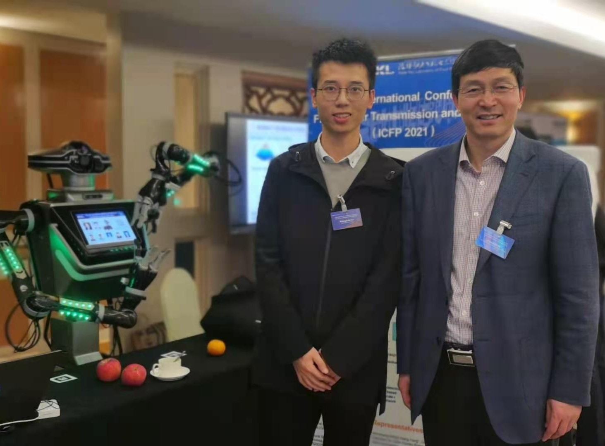
ICFP 2021, Hangzhou, China
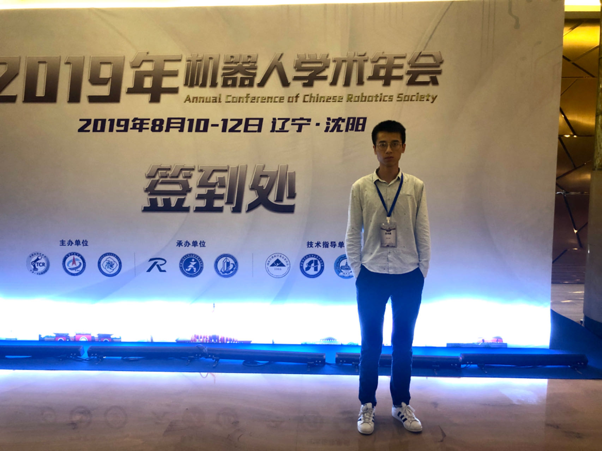
CCRS 2019, Shenyang, China
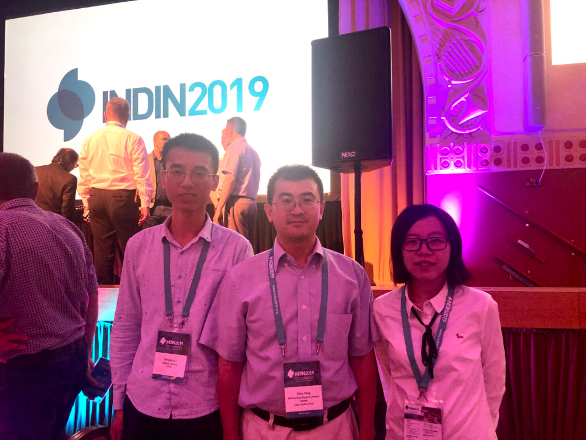
INDIN 2019, Helsinki, Finland

China RobotOP 2019, Ningbo, China
Selected Memories with Robot
During my traineeship at the ABB CRC Sweden, I have cherished various memories with different ABB products and robots. Most importantly, the bond I formed with my mentor and friends remains invaluable.

ABB Open Day
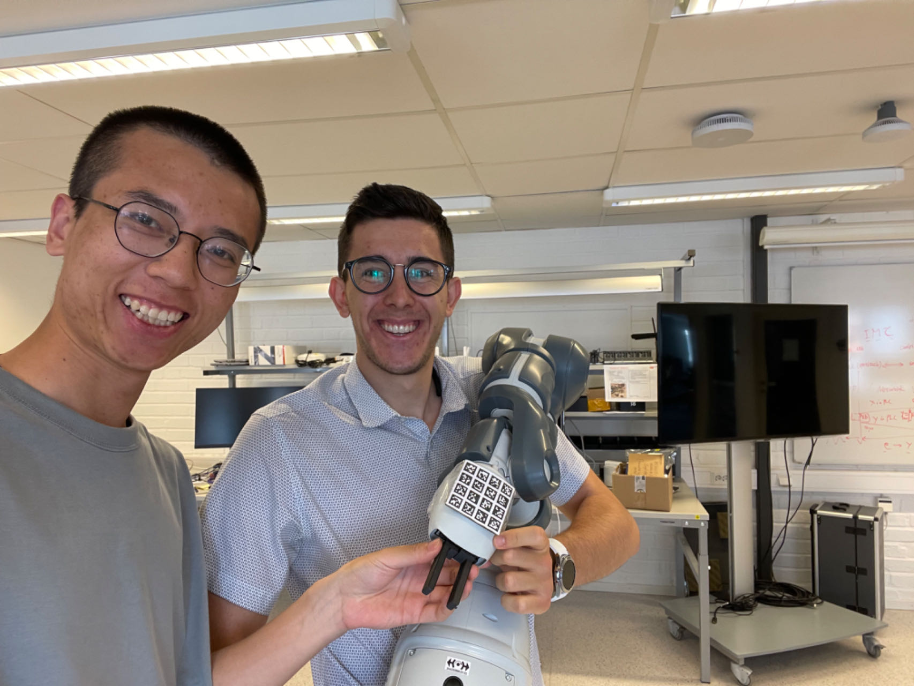
Single Arm YuMi
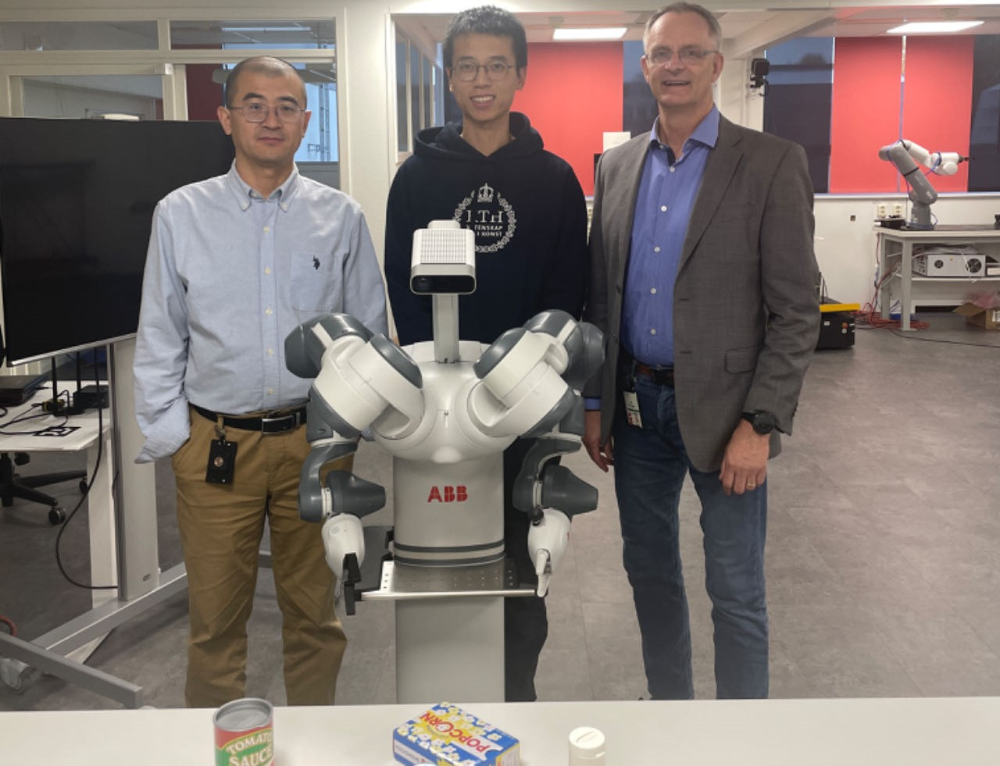
Mobile YuMi
During my PhD studies at Zhejiang University, I've had both positive and negative experiences with robots. However, the meetings with my team members working on robots will always be cherished as wonderful moments.
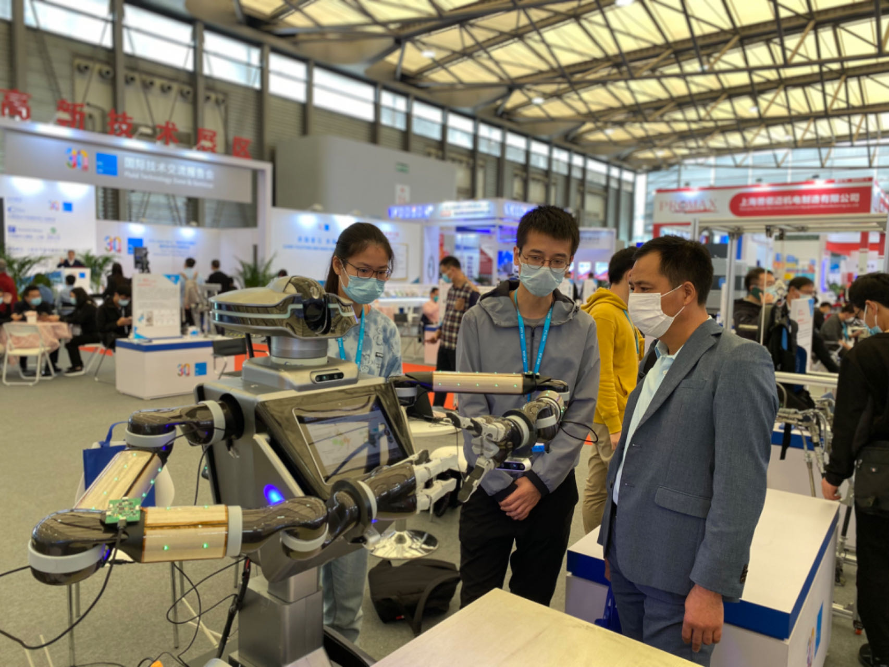
Dual-arm Kinova Robot in PTC 2021
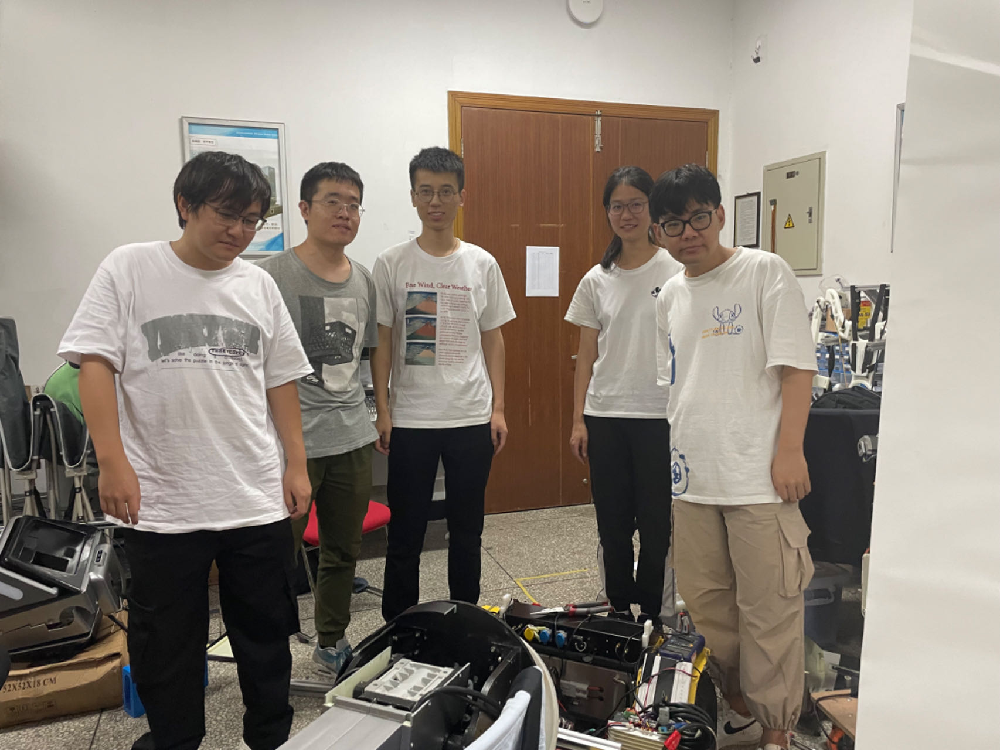
Dual-arm Kinova Robot Repairing
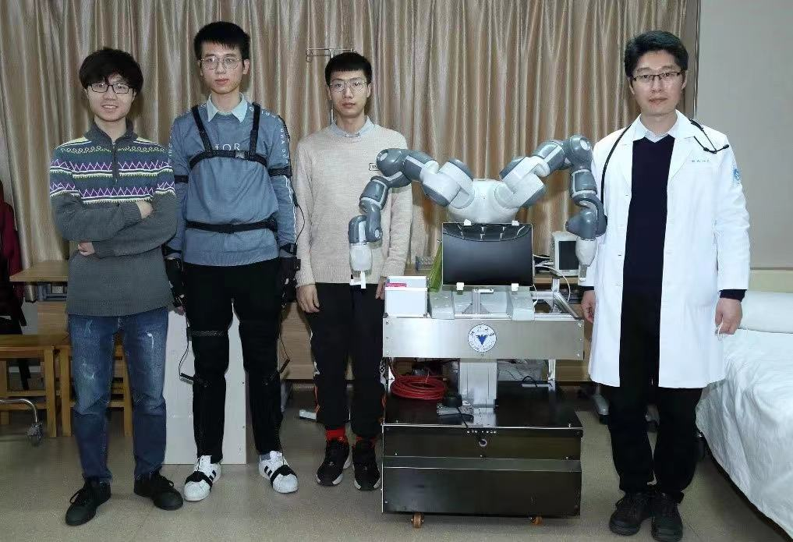
Mobile YuMi used in Isolation Ward
Earlier Projects during Bachelor in CUMT, 2014-2018
Application of Face Recognition and Voice Control in Remote Smart Home System-(CUMT
2017.04-2018.03):
This project is my 2nd SRTP project in CUMT. In this work, a smart home system is designed,
in which the face recognition and voice control tech. are applied. A patent of this work is granted and
the prototype of this
work won the 3rd prize in Virtual Instrument Contest of Jiangsu Province. Main contribution description:
(1) conducted a face recognition system based on the Face++ & LabVIEW, and implemented this tech into NI
myRIO for application；
(2) conducted a remote voice control system using Node.js and Raspberry Pi，
and realize the voice control using Siri based on Apple's HomeKit；
(3) conducted a tele-monitoring system using MJPG-streamer & LabVIEW，which can realize the realtime
monitoring of the home environment；(4) conducted a home environmental parameter acquisition system which
can realize
the monitoring of the temperature, humidity, strength of illumination and the air quality in home；
(5) remote home appliance control system：Through the http transmission protocol, the combination of
embedded hardware platform and labview realizes the remote real-time control of home appliances.
R&D of a portable friction coefficient tester-(CUMT 2016.04-2017.04): This project is my first SRTP
project in CUMT.
In this work, a prototype was built by the self-designed mechanical structure and
data processing program based on LabVIEW, which has been tested successfully.
I am in charge of designing the hardware circuit and programming the whole LabVIEW codes.
Compared with most of the current brake friction test bench, it has the outstanding advantages
and application significance, such as convenient installation, strong portability, greatly reduced cost,
small and portable volume, strong field application ability, easy data acquisition.
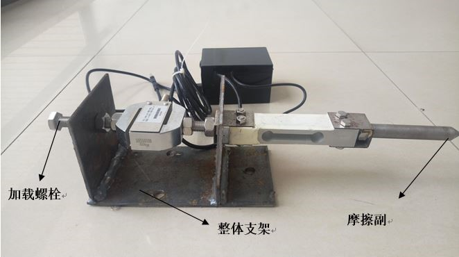
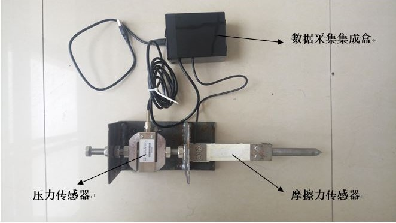
Update: 2026.04
Credit: web source from Mr. Binghao Huang